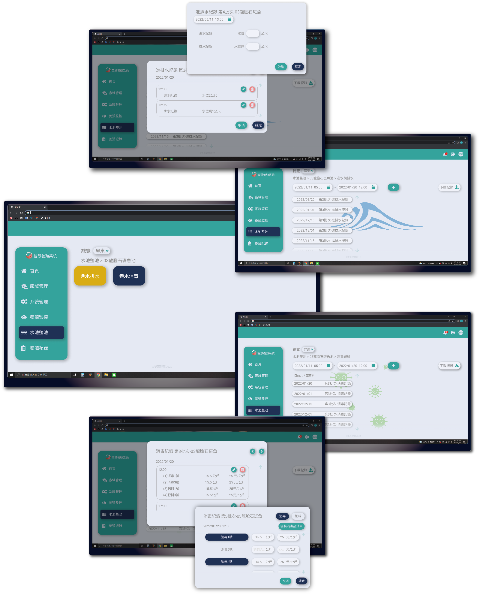

Aquaculture fully monitored
There's no full fish farming monitoring system available now. We offer water quality checking and digital fish farming records with cost reports to manage everything better and save time.
We combine devices that monitor water temperature, dissolved oxygen, pH, salinity, and water level in real-time. Also, we partner with a lab that tests for ammonia, nitrite, and bacteria.
This helps farmers see how the water is doing and fix problems quickly. Plus, we have a system to track feed expenses, which helps farmers manage their farms better.
Our partners
We have an excellent product manager, a imaginative UI/UX designer, flexible front-end Engineer, and a logical and meticulous back-end engineer.
As a UI/UX designer, I am responsible for conducting user interviews, designing user flows, creating interfaces, conducting usability testing, and gathering feedback.

There are two major companies in Taiwan that specialize in IoT aquaculture farming. They have developed mature and accurate water quality sensing devices.
Our system goal and service is to use their technology to advance further, which is Culture monitoring + Culture record (cost statistics) = Aquaculture traceability.
We combined three things into a system following aquaculture procedures. Our goal is to make it easier for people to use and give them confidence.

Aquaculture faces challenges
Culture monitoring device
01.Mature technologies available on market.
02.QL's is accurate but lacks public data.
03.MIC's interface is not user-friendly.
04.MIC's has comprehensive public data.
05.QL's has an automatic feeding machine.
Aquaculture process
01.Still using paper-based records.
02.Elderly avoid digital products.
03.Incomplete historical data.
04.No SOP for aquaculture, incomplete records.
Aquaculture traceability
01.Difficult to connect to gov platforms.
02.The platform usage process is messy.
03.The data is tedious and lacks focus.
04.Extra manpower to build data.
We have finalized the user workflow through repeated simulations. Farm management and system management are privileges for system engineers and are not visible to regular users.

Clean the pond to improve farming success. Two main steps: adjust pesticide ratio with water and apply disinfectants/probiotics.

Recording Inflow and Outflow
01.Inflow/outflow is a complicated.
02.List tracks daily in/out times.
03.Link to water level and pump system.
Record of disinfection and fertilization.
01.Record drug dosage and frequency.
02.Use the record to determine when to fry.
03.Check chemicals regularly and change the water frequently.
In recent years, facing environmental crises such as global climate change and food shortages, people have begun to address the issues of agriculture and the agricultural population.
The rapid development of 5G, shared cloud, cloud computing, and the Internet of Things has also brought new opportunities for smart agriculture.
Farmers used to rely on their experience to deal with unexpected situations, but now technology allows them to digitize farming processes. With the development of shared cloud technology,
smart agricultural products are emerging on the market, each with its own advantages, but lacking effective integration.We are working with the agricultural committee to promote smart farming to small farmers based on this standard.
We hope to upload farming data to an agricultural cloud for future data training.
We're gathering data about how different fishs and shirmps grow, and improving our sensors to make sure they work better. We're also learning from farmers. We hope that soon,
there will be lots of smart farms in Taiwan, and that more young people will want to come back and make money from them.